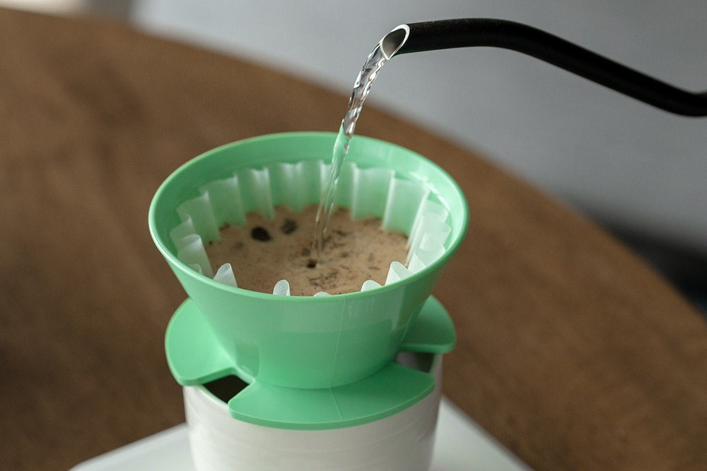

April Brewer Filter Recipe

Brew recommendation
- Dose: 13g
- Water: 200g at 93 degrees Celsius
- Grind size: Medium Course
- Brew time: 2:20-2:30
Recipe
- Begin your brew with an initial 100g pour.
- Use your first 30g of the pour to saturate the coffee bed evenly whilst implementing a circular pouring technique.
- Continue your pour by completing the final 70g pour into the center of the coffee bed.
- Replicate this pouring format once again, commencing your second pour at 35 seconds.
- Finish the brew with a total brew time in 2:30-3:00 minutes.
- Serve and Enjoy